- 01 前言-教程内容导读.md.html
- 02 Flutter 开发环境的搭建.md.html
- 03 新手村基础 Dart 语法 (上).md.html
- 04 新手村基础 Dart 语法 (下).md.html
- 05 Flutter 计数器项目解读.md.html
- 06 猜数字界面交互与需求分析.md.html
- 07 使用组件构建静态界面.md.html
- 08 状态数据与界面更新.md.html
- 09 校验结果与提示信息.md.html
- 10 动画使用与状态周期.md.html
- 11 猜数字整理与总结.md.html
- 12 电子木鱼界面交互与需求分析.md.html
- 13 电子木鱼静态界面构建.md.html
- 14 计数变化与音效播放.md.html
- 15 弹出选项与切换状态.md.html
- 16 用滑动列表展示记录.md.html
- 17 电子木鱼整理与总结.md.html
- 18 白板绘制界面交互与需求分析.md.html
- 19 认识自定义绘制组件.md.html
- 20 通过手势在白板上绘制.md.html
- 21 白板画笔的参数设置.md.html
- 22 撤销功能与画板优化.md.html
- 23 应用界面整合.md.html
- 24 数据的持久化存储.md.html
- 25 网络数据的访问.md.html
- 26 教程总结与展望.md.html
- 捐赠
17 电子木鱼整理与总结
通过上面 5 章的学习，我们已经完成了一个简单的电子木鱼小项目。这里将对项目在的一些知识点进行整理和总结，主要从 界面相关知识 和 获得的技能点 两个方面进行总结：
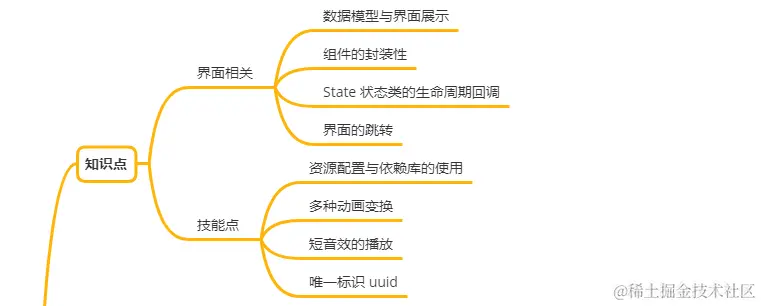
一、 界面相关的知识
电子木鱼的界面交互要比猜数字要复杂很多，比如选择切换音效和图片、跳转历史记录界面。所以需要维护的数据以及组件的构建逻辑也更复杂，其中蕴含的知识也就更多。
1. 数据模型与界面展示
在界面中往往会有一些数据相关性很强，界面构建中需要很多份这样的数据。比如每个木鱼的样式，都有名称、资源、功德范围。这些数据就像一个个豌豆粒，一个个单独维护会非常复杂，把它们封装在一个类中，就相当于让它们住进一个豌豆皮中。
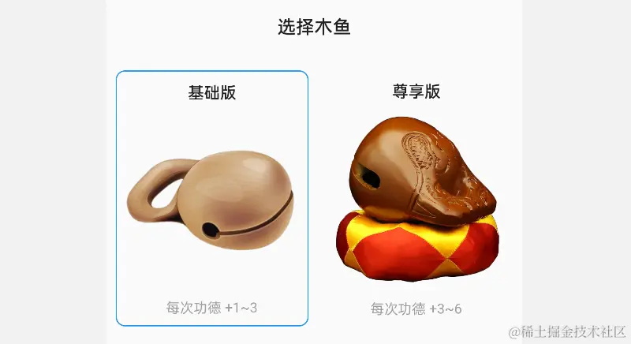
所以这种对若干个数据进行封装的类型也被形象地称之为 Bean，也可以称之为 数据模型 Model 。比如这里的 ImageOption 类型就是对木鱼样式数据的封装，一个 ImageOption 对象就对应着界面展示中的一个图片选项。
class ImageOption{
final String name; // 名称
final String src; // 资源
final int min; // 每次点击时功德最小值
final int max; // 每次点击时功德最大值
const ImageOption(this.name, this.src, this.min, this.max);
}
2. 组件的封装性
还拿木鱼选择的界面来说，可以看出两个木鱼选项的界面结构是完全一样的，只不过是内容数据信息的不同。这时并没有必要写两份构建逻辑，通过一个组件进行封装，界面构建这依赖的数据通过构造中传入。比如这里依赖 ImageOption 和是否激活两个数据：
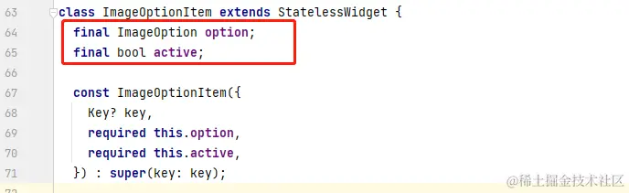
封装数据模型类之后，在传参时也更加方便，否则就需要传入一个个的豌豆粒。在构建逻辑中就可以根据传入的数据，构建对应的组件，完成界面展示的任务。
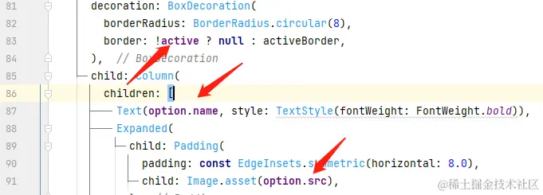
其中 ImageOptionItem 组件也像一个豌豆，里面的豌豆粒就是构建过程中使用的组件。豌豆把豌豆粒包裹在一块，这就是一种现实中的 封装 。为 ImageOptionItem 组件提供不同的 ImageOption，就可以展示不同的界面。所以这里只需要准备份数据就行了，而不是重复写两次构建逻辑。
这就是封装的一大特点： 可复用性。
复用的目标就是封装的内容，对于组件来说，封装的目标就是构建逻辑。
ImageOptionItem(option: option1, active: true),
ImageOptionItem(option: option2, active: false),
可复用性往往会让使用变得简单，比如 Text 组件是源码提供的组件，它封装了文本渲染的过程。对于使用者来说，只要创建 Text 对象，并不需要理解底层的渲染原理。如果 ImageOptionItem 组件是 A 同学写的，那么把它发给 B 同学，那 B 同学只需要准备数据即可。所以，逻辑一旦封装，也会有 普适性 : 一人封装，万人可用，这也是类库生态的基石。
3. State 状态类的生命周期回调
State 的生命周期回调是非常重要的，但对于初学者来说，目前只能先了解这些回调的作用和使用方式。
- initState 回调方法会在 State 对象创建后被触发一次，可以在其中处理成员对象的初始化逻辑。比如动画控制器创建、音频播放器对象的创建等：
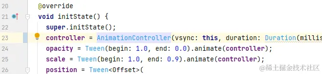
- dispose 回调方法会在 State 对象销毁前触发一次，用于释放一些资源，比如动画控制器、文字控制器、音频播放器等的销毁工作。
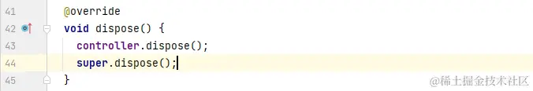
- build 回调方法返回 Widget 对象，也就是组件的构建逻辑。该方法可能在一个 State 对象生命之中可能触发多次，通过
State#setState方法可以导致 build 方法重新执行。
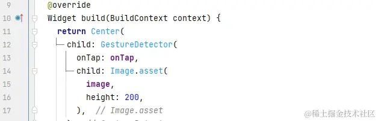
- didUpdateWidget 会在 State 对应的组件发生变化时被触发；它在一个 State 对象生命之中也可能触发多次。最常见的场合是上层状态类触发 setState，导致组件发生变化，该回调中可以访问到旧的组件，通常会根据新旧组件的配置属性来触发事件，或更新一些状态类内部数据。
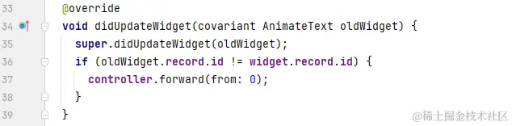
现在只需要会用这四个回调即可，想要完全把握 State 状态类的生命周期回调，需要从源码的角度去理解回调触发的流程。希望之后，你可以在后续的路途上，通过 《Flutter 渲染机制 - 聚沙成塔》 找到满意的答案。
4. 界面的跳转
MaterialApp 的内部集成了一套路由体系，在代码中只通过 Navigator.of(context) 来获取 NavigatorState 对象，该对象的 push 方法实现可以跳转界面的功能。下面代码中 MaterialPageRoute 是一个默认的跳转动画界面路由，其中的 builder 方法用来构建跳转到的界面：
Navigator.of(context).push(
MaterialPageRoute(
builder: (_) => RecordHistory(
records: _records.reversed.toList(),
),
),
);
二、 技能点
在电子木鱼项目中，涉及到了资源的引入，以及使用依赖库。依赖库的存在，极大方便了开发者。你可以轻松地获取和使用别人封装好的代码，来为自己的项目服务，比如这里的音频播放器、uuid 的获取以及日期时间的格式化。
1. 资源配置与依赖库的使用
Flutter 项目的配置文件是 pubspec.yaml ，其中依赖库配置在 dependencies 节点下。配置之后记得添加一右上角的 pub get 按钮获取依赖，或者在根目录下的命令行中输入:
flutter pub get
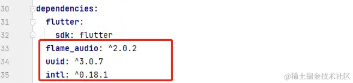
获取依赖之后，就可以导入包中的文件，然后使用其中的类或方法：
import 'package:flame_audio/flame_audio.dart';
图片、文本等本地资源需要在 flutter 节点下的 asstes 下配置，一般习惯于将资源文件放在项目根目录的 assets 文件夹中。配置时只需要写文件夹，就可以访问期内的所有文件：
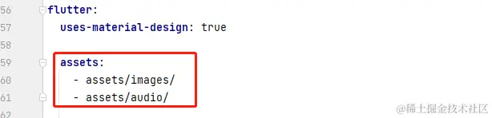
2. 多种动画变换
木鱼在点击时，当前功德文字会以 缩放+移动+透明度 动画变化，代码中通过多个 XXXTransition 嵌套实现的。除了这三种，还有些其他的 Transition ，在使用时都需要使用者提供相关类型的动画器:
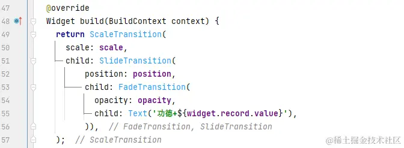
这里想强调的是 ： 基于一个动画控制器，可以通过 Tween 来生成其他类型的动画器 Animation ，它们共用一个动力源。也就是说 controller 启动时，这些动画器都会进行动画变化：
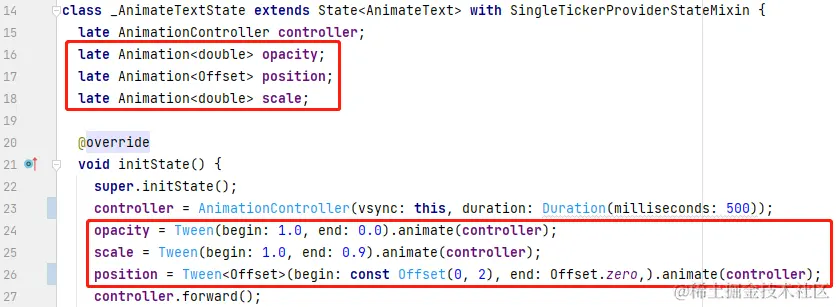
3. 短音效的播放
flame_audio 插件可以实现音频播放的功能，使用起来也非常简单：通过 FlameAudio.createPool 静态方法，指定资源创建 AudioPool ，执行 start 即可。
AudioPool pool = await FlameAudio.createPool(src, maxPlayers: 1);
pool.start();
Flutter 中音频播放还有一个 audioplayers 库，其实 flame_audio 是对该库的一个上层封装，引入了缓存池，在播放短音效的场景中更好一些。我也试过 audioplayers ，感觉连续点击短音效有一点杂音，而 flame_audio 表现良好。
4. 唯一标识 uuid
有些时候，我们需要用一个成员属性来标识对象的唯一性， 一般应用通过 uuid 获取标识符可以视为唯一的。这里使用 uuid 的目的是为每次功德的增加记录提供一个身份标识。
final Uuid uuid = Uuid();
String id = uuid.v4();
得益于 Flutter 的良好生态环境，像这些基础功能，都已经有了依赖库，所以两行代码就能完成需求。以后有通用的能需要求，可以在 pub 中看一下有没有依赖库。当然，你有好的功能代码，也可以创建依赖库，提交到 pub 中，供大家一起使用。
三、接触的内置组件
最后来整理一下目前电子木鱼项目中用到的 Flutter 内置组件，大家可以根据下表，结合源码以及应用界面，思考一下这些组件的作用和使用方式：
1. 基础组件
| 组件名称 | 功能 | 猜数字中的使用 |
|---|---|---|
| Image | 图片展示 | 展示木鱼图片 |
| GestureDetector | 手势事件监听器 | 监听点击图片事件，处理敲击逻辑 |
| ElevatedButton | 升起按钮 | 左上角选择音频和木鱼样式和按钮 |
| ScaleTransition | 缩放变换 | 功德数字缩放动画 |
| SlideTransition | 移动变换 | 功德数字移动动画 |
| FadeTransition | 透明度变换 | 功德数字透明度动画 |
| Material | 材料组件 | 为选择界面提供材料设计默认主题 |
2. 组合结构型
| 组件名称 | 功能 | 猜数字中的使用 |
|---|---|---|
| ListTile | 列表条目通用结构 | 音频选项以及列表条目 |
3. 布局组件
| 组件名称 | 功能 | 猜数字中的使用 |
|---|---|---|
| Expanded | Row/Column 中延展区域 | 主页面上下平分区域 |
| Positioned | Stack 中定位组件 | 左上角按钮的定位 |
| Wrap | 包裹若干组件 | 左上角两个按钮的竖直包裹 |
| Padding | 设置内边距 | 木鱼样式选择界面中的布局 |
| SizedBox | 尺寸设置 | 选择界面的高度设置 |
| ListView | 滑动列表 | 历史记录界面 |
最后想说一下关于木鱼项目的演变：当前项目的功能有点击发声、切换图片、数据记录。其实可以基于此完成另一个小项目，比如电子宠物饲养类型的应用，可以喂食，抚摸发出叫声，切换宠物等操作。这和点击敲木鱼是殊途同归的，有时间和兴趣的可以自己尝试一下。
© 2019 - 2023 Liangliang Lee. Powered by gin and hexo-theme-book.